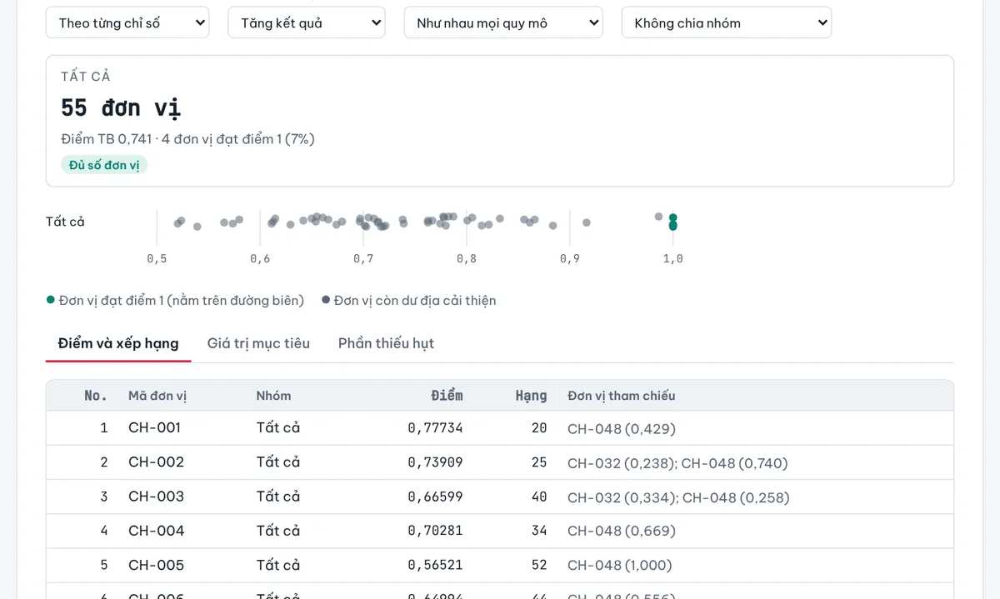
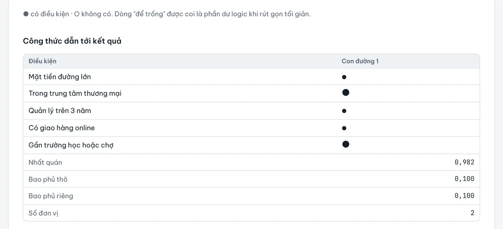

Năm bướcFive steps
- 1
Trò chuyện để chọn chỉ sốChat to choose indicators
Khoảng 5 phút trên trang Tham gia. Chưa cần số liệu.About 5 minutes on the Take part page. No figures needed yet.
- 2
Đồng ý và nhận phiếu qua emailConsent and get the template by email
Đọc cam kết, xác nhận, nhập email. Phiếu Excel, tóm tắt chỉ số và mã hồ sơ về hộp thư.Read the commitments, confirm, enter your email. The Excel template, indicator summary and case code arrive in your inbox.
- 3
Điền phiếuFill in the template
Mỗi dòng một đơn vị, dùng mã thay tên. Trang Kiểm tra trong phiếu báo ô cần sửa.One row per unit, codes instead of names. The Check sheet flags cells to fix.
- 4
Gửi dữ liệuSend the data
Tải lên trang Gửi dữ liệu bằng mã hồ sơ, hoặc trả lời email kèm file.Upload it on the Send data page with your case code, or reply to the email with the file.
- 5
Nhận kết quảReceive the results
TS. Nguyễn Hoàng Phú và nhóm phân tích duyệt dữ liệu, chạy Khung Hiệu Quả và gửi kết quả kèm bản phân tích ngắn.Dr. Hoang-Phu Nguyen and the team review the data, run Efficiency Framework and send the results with a short analysis.
Trò chuyện để chọn chỉ sốChat to choose indicators
Trợ lý trên trang Tham gia hỏi lần lượt: loại đơn vị cần so sánh, số đơn vị có số liệu, kỳ dữ liệu, các chỉ số đầu vào, đầu ra và điều kiện, mục đích dùng kết quả và hướng cải thiện mong muốn. Mỗi ngành có sẵn bộ chỉ số khuyến nghị; doanh nghiệp bỏ chỉ số không có số liệu và thêm chỉ số riêng của ngành mình. Các câu trả lời chỉ nằm trên trình duyệt cho tới khi bạn bấm Gửi ở bước cuối. The assistant on the Take part page asks, in order: the kind of unit to compare, how many units have data, the period, the input, output and condition indicators, what you will use the results for, and the direction of improvement you prefer. Each sector comes with a recommended indicator set; you untick what you have no data for and add indicators specific to your business. Your answers stay in your browser until you press Send at the last step.
| Vai tròRole | NghĩaMeaning | Ví dụ với cửa hàngStore example |
|---|---|---|
| Đầu vàoInput | Nguồn lực đơn vị dùng: người, tiền, diện tích, hàng hoáResources the unit uses: people, money, space, goods | Diện tích, số nhân viên, chi phí vận hànhFloor area, staff, operating cost |
| Đầu raOutput | Kết quả đơn vị tạo ra, càng lớn càng tốtResults the unit produces, where more is better | Doanh thu, số hoá đơn, khách thành viên mớiRevenue, receipts, new members |
| Điều kiệnCondition | Bối cảnh và cách làm, ghi Có hoặc KhôngContext and practices, recorded as Yes or No | Mặt tiền đường lớn, quản lý trên 3 nămMain-road frontage, manager with 3+ years |
Ba điểm dễ nhầm khi chọn chỉ sốThree common mistakes when choosing indicators
- Chỉ số càng thấp càng tốt, như số khiếu nại hay giá trị hàng huỷ, không đưa vào làm đầu ra. Ghi vào phần ghi chú để nhóm phân tích chọn cách xử lý.Indicators where lower is better, such as complaints or waste, do not go in as outputs. Mention them in the notes so the team can decide how to handle them.
- Dùng số gốc, không dùng tỷ lệ tự tính như doanh thu trên mét vuông. Khung Hiệu Quả tự đặt nguồn lực và kết quả cạnh nhau.Use raw figures, not ratios you compute yourself such as revenue per square metre. Efficiency Framework puts resources and results side by side on its own.
- Đủ số đơn vị cho số chỉ số. Với m đầu vào và s đầu ra, cần tối thiểu max(m × s; 3 × (m + s)) đơn vị, nên có gấp đôi. Bộ khuyến nghị 3 đầu vào và 3 đầu ra cần tối thiểu 18, nên có từ 36. Trợ lý tự tính và báo khi thiếu.Enough units for the number of indicators. With m inputs and s outputs you need at least max(m × s; 3 × (m + s)) units, ideally twice that. The recommended 3 inputs and 3 outputs need at least 18, ideally 36. The assistant checks this for you.
Đồng ý và nhận phiếu qua emailConsent and get the template by email
Sau khi kiểm tra lại bộ chỉ số, trợ lý hỏi mỗi dòng dữ liệu có gắn với một người hay một hộ cụ thể không, rồi mời bạn đọc thông báo xử lý dữ liệu và cam kết, lập theo Luật Bảo vệ dữ liệu cá nhân 91/2025/QH15. Ba mục bắt buộc: bạn có thẩm quyền chia sẻ dữ liệu thay mặt doanh nghiệp, bạn đã đọc thông báo, và bạn đồng ý cho xử lý dữ liệu để phân tích và gửi kết quả, kể cả lưu trên dịch vụ Google có máy chủ có thể ở ngoài Việt Nam. Nếu mỗi dòng là một người hay một hộ, có thêm một mục bắt buộc về căn cứ hợp pháp và thoả thuận xử lý dữ liệu. Hai mục không bắt buộc, mỗi mục là một mục đích riêng: nhận giới thiệu dịch vụ tư vấn, và cho dùng dữ liệu ẩn danh vào nghiên cứu, giảng dạy. After you check the indicator set, the assistant asks whether each row describes a specific person or household, then asks you to read the data processing notice and commitments, prepared under Personal Data Protection Law 91/2025/QH15. Three items are required: you are authorised to share the data on behalf of the company, you have read the notice, and you agree to the data being processed to analyse your units and deliver the results, including storage on Google services whose servers may be outside Vietnam. If each row is a person or household, one more required item covers the lawful basis and a data processing agreement. Two items are optional, each a separate purpose: receiving consulting service information, and anonymised use for research and teaching.
Sau đó bạn nhập thông tin liên hệ. Email tự động gửi về hộp thư gồm ba thứ:You then enter your contact details. An automatic email brings three things:
- phiếu dữ liệu Excel đúng ngành đã chọn;the Excel data template for your sector;
- bảng tóm tắt bộ chỉ số đã thống nhất, gồm cột nào để trống và cột nào cần thêm;a summary of the agreed indicators, including which columns to leave empty and which to add;
- mã hồ sơ, dạng KHQ-261122-AB12, dùng khi gửi dữ liệu và khi liên hệ.your case code, in the form KHQ-261122-AB12, used when sending data and in any correspondence.
Không thấy email sau vài phút: kiểm tra mục Spam hoặc Quảng cáo, rồi liên hệNo email after a few minutes: check your spam or promotions folder, then write to drnhphu@gmail.com.
Điền phiếuFill in the template
Phiếu có bốn trang. Hướng dẫn nhận thông tin chung như kỳ dữ liệu và nguồn số liệu. DAT là nơi điền số liệu. Từ điển dữ liệu giải thích từng cột. Kiểm tra tự rà từng dòng và báo ô cần sửa. Chọn một ô ở trang DAT sẽ thấy định nghĩa của cột đó. The template has four sheets. Hướng dẫn (Instructions) takes general details such as the period and data source. DAT is where the figures go. Từ điển dữ liệu (Data dictionary) explains each column. Kiểm tra (Check) reviews each row and flags cells to fix. Selecting a cell on DAT shows the definition of its column.
Quy tắc điềnRules
- Mỗi dòng là một đơn vị; dòng 1 là tên cột. Không đổi tên trang DAT, không chèn dòng tiêu đề hay dòng tổng cộng, không gộp ô.One row per unit; row 1 holds the column names. Do not rename the DAT sheet, add title or total rows, or merge cells.
- Cột đầu tiên là mã đơn vị, ví dụ CH-012. Không ghi tên người, số điện thoại hay thông tin khách hàng ở bất kỳ ô nào.The first column is the unit code, for example CH-012. Do not put personal names, phone numbers or customer details in any cell.
- Mọi đơn vị dùng cùng một kỳ dữ liệu, ghi ở trang Hướng dẫn.All units use the same period, recorded on the Instructions sheet.
- Ô số chỉ ghi số. Tiền ghi đủ số đồng, ví dụ 1350000000, không ghi "1,35 tỷ", "triệu", "đ" hay dấu %.Number cells hold numbers only. Money in full VND, for example 1350000000, not "1.35 billion", "million", "đ" or a % sign.
- Cột Có/Không: chọn từ danh sách thả xuống trong ô.Yes/No columns: pick from the drop-down list in the cell.
- Ô không có số liệu: để trống và ghi lý do ở cột Ghi chú. Chỉ ghi 0 khi số thật sự bằng 0.Missing figures: leave the cell empty and explain in the Notes column. Enter 0 only when the true value is zero.
- Cột khuyến nghị mà doanh nghiệp không có số liệu cho mọi đơn vị: để trống cả cột, không xoá cột. Chỉ số thêm: tạo cột mới bên phải cột Ghi chú, đặt đúng tên đã thống nhất trong email.Recommended columns with no data for any unit: leave the whole column empty, do not delete it. Added indicators: create new columns to the right of the Notes column, using the names agreed in the email.
- Trước khi gửi, mở trang Kiểm tra: mọi dòng phải ghi "Đạt" và ô Trạng thái ghi "Sẵn sàng gửi".Before sending, open the Check sheet: every row should read "Đạt" (OK) and the status cell "Sẵn sàng gửi" (ready to send).
Gửi dữ liệuSend the data
Nếu mỗi dòng là một người hay một hộ, hai bên ký thoả thuận xử lý dữ liệu trước; chức năng tải lên của hồ sơ đó chỉ mở sau khi ký. Có hai cách gửi. Cách thứ nhất là tải file lên trang Gửi dữ liệu với mã hồ sơ và email đã đăng ký; file được đổi tên theo mã hồ sơ khi lưu, nên tên file gốc không còn lại. Cách thứ hai là trả lời email gửi phiếu và đính kèm file. If each row is a person or household, both sides first sign a data processing agreement; uploading for that case opens only once it is signed. There are two ways to send. Upload the file on the Send data page with your case code and registered email; the file is renamed to the case code when stored, so the original file name is not kept. Or reply to the template email with the file attached.
Sau khi nhận file, nhóm phân tích duyệt dữ liệu: xem cách đọc từng cột, các ô không đọc được và các giá trị bất thường. Nếu cần, nhóm sẽ liên hệ để làm rõ trước khi chạy phân tích, vì kết quả chỉ tốt bằng dữ liệu đưa vào. Once the file arrives, the team reviews the data: how each column is read, unreadable cells and unusual values. If anything needs clarifying, the team gets in touch before running the analysis, because results are only as good as the data.
Nhận kết quảReceive the results
Kết quả gửi riêng cho người liên hệ gồm bốn phần và một bản phân tích ngắn chỉ ra vấn đề nổi bật nhất. Hình minh hoạ dưới đây chạy trên dữ liệu giả lập 55 cửa hàng, không phải số liệu của doanh nghiệp nào. Results are sent privately to your contact person in four parts, with a short analysis that points to the most prominent issue. The illustrations below were run on simulated data for 55 stores, not the figures of any real company.
Điểm hiệu quả, thứ hạng và đơn vị tham chiếuEfficiency scores, ranks and peers
Mỗi đơn vị có điểm từ 0 đến 1 so với các đơn vị làm tốt nhất trong cùng nhóm. Cột đơn vị tham chiếu cho biết nên học theo đơn vị nào; số trong ngoặc là mức đóng góp của đơn vị tham chiếu đó vào mục tiêu của đơn vị đang xét. Each unit gets a score from 0 to 1 against the best units in its group. The peer column shows which units to learn from; the number in brackets is how much each peer contributes to the target of the unit in question.

Công thức thành côngSuccess recipes
Mỗi cột là một con đường dẫn tới đơn vị hiệu quả cao. Chấm to là điều kiện lõi, chấm nhỏ là điều kiện phụ. Nhất quán cho biết trong các đơn vị có tổ hợp này, bao nhiêu là đơn vị hiệu quả cao; bao phủ cho biết tổ hợp này giải thích được bao nhiêu phần đơn vị hiệu quả cao. Ví dụ trong hình: nhất quán 0,982 nhưng bao phủ 0,100, tức là công thức rất chắc nhưng chỉ đúng với khoảng một phần mười số đơn vị hiệu quả cao. Each column is one path to high efficiency. Large dots are core conditions, small dots are supporting ones. Consistency says how many of the units with this combination are highly efficient; coverage says how much of the highly efficient group the combination explains. In the example, consistency is 0.982 but coverage is 0.100: a very reliable recipe that applies to only about a tenth of the highly efficient units.

Kế hoạch cải thiệnImprovement plan
Bảng ưu tiên cho biết điều kiện nào nhiều đơn vị còn thiếu nhất và ai tác động được tới điều kiện đó. Bảng việc cần làm liệt kê, cho từng đơn vị chưa đạt điểm 1, đơn vị nên học theo, chỉ số cần tăng nhiều nhất và các điều kiện còn thiếu so với công thức. The priority table shows which conditions are missing in the most units and who can act on each. The action table lists, for every unit below 1, the unit to learn from, the indicators that need the largest increase and the conditions still missing from the recipe.

Sau kết quảAfter the results
Bản phân tích ngắn nêu điều đáng chú ý nhất trong dữ liệu và các câu hỏi nên đào sâu. Doanh nghiệp muốn đi tiếp, ví dụ thiết kế lại chỉ tiêu cho đơn vị, thử nghiệm một điều kiện trong công thức thành công, hay theo dõi hiệu quả định kỳ, có thể trao đổi với TS. Nguyễn Hoàng Phú về dịch vụ tư vấn chuyên sâu. The short analysis states the most notable finding in your data and the questions worth pursuing. If you want to go further, for example redesigning unit targets, testing one condition from a success recipe, or tracking efficiency every period, you can discuss in-depth consulting with Dr. Hoang-Phu Nguyen.
Giới hạn cần biếtLimitations
- So sánh tương đối. Điểm của mỗi đơn vị phụ thuộc vào các đơn vị khác trong nhóm; thêm hoặc bớt đơn vị có thể đổi điểm của đơn vị khác.Relative comparison. Each unit’s score depends on the others in the group; adding or removing units can change other units’ scores.
- Nhạy với số liệu sai. Một đơn vị có số liệu nhập sai theo hướng quá tốt sẽ kéo điểm cả nhóm xuống. Đây là lý do có bước duyệt dữ liệu trước khi phân tích.Sensitive to bad data. A unit whose figures are wrongly too good drags down everyone else. That is why data review comes before the analysis.
- Phụ thuộc chỉ số được chọn. Bỏ sót một nguồn lực quan trọng thì đơn vị dùng nhiều nguồn lực đó sẽ được điểm cao hơn thực tế.Depends on the indicators chosen. Leaving out an important resource makes units that use a lot of it look better than they are.
- Không chứng minh nhân quả. Công thức thành công cho biết tổ hợp điều kiện nào đi cùng kết quả tốt trong dữ liệu. Muốn biết điều kiện đó có tạo ra kết quả hay không, cần thử nghiệm trong thực tế.No proof of cause. A success recipe shows which combinations go with good results in the data. Whether a condition produces the result needs a real-world test.
- Ít đơn vị. Dưới mức tối thiểu, nhiều đơn vị cùng đạt điểm 1 và điểm không còn phân biệt được.Too few units. Below the minimum, many units score 1 and the scores stop telling units apart.
Câu hỏi thường gặpFrequently asked questions
Có cần biết thống kê để tham gia không?Do I need to know statistics?
Không. Doanh nghiệp chỉ cần biết hoạt động của mình đo bằng những số nào. Phần chọn mô hình, đặt ngưỡng và đọc kết quả do nhóm phân tích thực hiện.No. You only need to know which figures describe your operations. Model choice, thresholds and interpretation are done by the analysis team.
Khác gì bảng KPI doanh nghiệp đang dùng?How is this different from our KPI dashboard?
KPI xem từng chỉ số hoặc từng tỷ số riêng lẻ. Khung Hiệu Quả xét mọi nguồn lực và mọi kết quả cùng lúc, không cần ai gán trọng số, rồi chỉ ra tổ hợp điều kiện đi cùng đơn vị làm tốt. Hai cách bổ sung cho nhau.KPIs look at one indicator or one ratio at a time. Efficiency Framework weighs all resources and results together without anyone setting weights, then shows which combinations of conditions go with the best units. The two complement each other.
Doanh nghiệp có ít hơn 18 đơn vị thì sao?What if we have fewer than 18 units?
Có hai hướng. Bớt chỉ số để hạ mức tối thiểu, hoặc dùng số liệu theo tháng, mỗi đơn vị trong mỗi tháng là một dòng. Cách thứ hai cho nhiều dòng hơn nhưng các dòng của cùng một đơn vị không độc lập với nhau, nên kết quả cần đọc thận trọng hơn. Trợ lý sẽ hỏi bạn chọn hướng nào.Two options. Use fewer indicators to lower the minimum, or use monthly data with each unit-month as one row. The second gives more rows, but rows from the same unit are not independent, so results need more care. The assistant asks which you prefer.
Có thêm chỉ số riêng của ngành được không?Can we add our own indicators?
Được. Thêm trong khung trò chuyện, rồi tạo cột tương ứng bên phải cột Ghi chú trong phiếu. Chỉ số ngoài bộ khuyến nghị được chuyên gia xem xét trước khi đưa vào chấm điểm.Yes. Add them in the chat, then create matching columns to the right of the Notes column in the template. Indicators outside the recommended set are reviewed by experts before they are scored.
Ai xem được dữ liệu của doanh nghiệp?Who can see our data?
Chỉ TS. Nguyễn Hoàng Phú và thành viên nhóm phân tích được giao hồ sơ. File lưu theo mã hồ sơ, tách khỏi thông tin liên hệ, trên dịch vụ Google có máy chủ có thể ở ngoài Việt Nam. Dữ liệu được lưu lâu dài và xoá ngay khi doanh nghiệp yêu cầu. Chi tiết ở phần thông báo xử lý dữ liệu.Only Dr. Hoang-Phu Nguyen and team members assigned to your case. Files are stored under the case code, apart from contact details, on Google services whose servers may be outside Vietnam. Data is kept long term and deleted as soon as you ask. See the data processing notice.
Có mất phí không?Is there a fee?
Kết quả và bản phân tích ngắn không mất phí trong giai đoạn chạy thử (đến tháng 3/2027). Tư vấn chuyên sâu sau đó là dịch vụ riêng, chỉ thực hiện khi doanh nghiệp đồng ý.Results and the short analysis are free during the pilot (until March 2027). In-depth consulting afterwards is a separate service, provided only with your agreement.
Banker, R. D., Charnes, A., & Cooper, W. W. (1984). Some models for estimating technical and scale inefficiencies in data envelopment analysis. Management Science, 30(9), 1078–1092.
Charnes, A., Cooper, W. W., & Rhodes, E. (1978). Measuring the efficiency of decision making units. European Journal of Operational Research, 2(6), 429–444.
Cheng, C.-H., & Lin, Y. (2002). Evaluating the best main battle tank using fuzzy decision theory with linguistic criteria evaluation. European Journal of Operational Research, 142(1), 174–186.
Ragin, C. C. (2008). Redesigning social inquiry: Fuzzy sets and beyond. University of Chicago Press.
Rezaei, J. (2016). Best-worst multi-criteria decision-making method: Some properties and a linear model. Omega, 64, 126–130.
Tone, K. (2001). A slacks-based measure of efficiency in data envelopment analysis. European Journal of Operational Research, 130(3), 498–509.